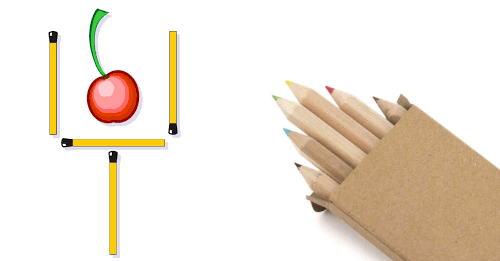

1.1 Piensa como un programador
Piensa como un programador
Una de las acepciones que trae el Diccionario de Real Academia de la Lengua Española (RAE) respecto a la palabra Problema es “Planteamiento de una situación cuya respuesta desconocida debe obtenerse a través de métodos científicos”. Con miras a lograr esa respuesta, un problema se puede definir como una situación en la cual se trata de alcanzar una meta y para lograrlo se deben hallar y utilizar unos medios y unas estrategias.
La mayoría de problemas tienen algunos elementos en común: un estado inicial; una meta, lo que se pretende lograr; un conjunto de recursos, lo que está permitido hacer y/o utilizar; y un dominio, el estado actual de conocimientos, habilidades y energía de quien va a resolverlo (Moursund, 1999).
Casi todos los problemas requieren, que quien los resuelve, los divida en submetas que, cuando son dominadas (por lo regular en orden), llevan a alcanzar el objetivo. La solución de problemas también requiere que se realicen operaciones durante el estado inicial y las submetas, actividades (conductuales, cognoscitivas) que alteran la naturaleza de tales estados (Schunk, 1997).
Cada disciplina dispone de estrategias específicas para resolver problemas de su ámbito; por ejemplo, resolver problemas matemáticos implica utilizar estrategias propias de las matemáticas. Sin embargo, algunos psicólogos opinan que es posible utilizar con éxito estrategias generales, útiles para resolver problemas en muchas áreas. A través del tiempo, la humanidad ha utilizado diversas estrategias generales para resolver problemas. Schunk (1997), Woolfolk (1999) y otros, destacan los siguientes métodos o estrategias de tipo general:
- Ensayo y error: Consiste en actuar hasta que algo funcione. Puede tomar mucho tiempo y no es seguro que se llegue a una solución. Es una estrategia apropiada cuando las soluciones posibles son pocas y se pueden probar todas, empezando por la que ofrece mayor probabilidad de resolver el problema.
Ejemplo
Una bombilla que no prende: revisar la bombilla, verificar la corriente eléctrica, verificar el interruptor.
- Iluminación: Implica la súbita conciencia de una solución que sea viable. Es muy utilizado el modelo de cuatro pasos formulado por Wallas (1921): preparación, incubación, iluminación y verificación.
Estos cuatro momentos también se conocen como proceso creativo. Algunas investigaciones han determinado que cuando en el periodo de incubación se incluye una interrupción en el trabajo sobre un problema se logran mejores resultados desde el punto de vista de la creatividad. La incubación ayuda a "olvidar" falsas pistas, mientras que no hacer interrupciones o descansos puede hacer que la persona que trata de encontrar una solución creativa se estanque en estrategias inapropiadas.
Ejemplos

- Dispones de 6 lápices/palillos/cerillas igual de largos, ¿como puedes formar 4 triángulos?
- Mueve 2 cerillas para seguir teniendo una copa pero con la cereza fuera.
- Heurística: Se basa en la utilización de reglas empíricas para llegar a una solución. El método heurístico conocido como “IDEAL”, formulado por Bransford y Stein (1984), incluye cinco pasos:
Identificar el problema, definir y presentar el problema, explorar las estrategias viables, avanzar en las estrategias y lograr la solución y volver para evaluar los efectos de las actividades (Bransford & Stein, 1984). El matemático Polya (1957) también formuló un método heurístico para resolver problemas que se aproxima mucho al ciclo utilizado para programar computadores. A lo largo de esta Guía se utilizará este método propuesto por Polya.
-
Algoritmos: Consiste en aplicar adecuadamente una serie de pasos detallados que aseguran una solución correcta. Por lo general, cada algoritmo es específico de un dominio del conocimiento. La programación de computadores se apoya en este método.
-
Modelo de procesamiento de información: El modelo propuesto por Newell y Simon (1972) se basa en plantear varios momentos para un problema (estado inicial, estado final y vías de solución). Las posibles soluciones avanzan por subtemas y requieren que se realicen operaciones en cada uno de ellos.
-
Análisis de medios y fines: Se funda en la comparación del estado inicial con la meta que se pretende alcanzar para identificar las diferencias.
Luego se establecen submetas y se aplican las operaciones necesarias para alcanzar cada submeta hasta que se alcance la meta global. Con este método se puede proceder en retrospectiva (desde la meta hacia el estado inicial) o en prospectiva (desde el estado inicial hacia la meta).
-
Razonamiento analógico: Se apoya en el establecimiento de una analogía entre una situación que resulte familiar y la situación problema. Requiere conocimientos suficientes de ambas situaciones.
-
Lluvia de ideas: Consiste en formular soluciones viables a un problema. El modelo propuesto por Mayer (1992) plantea: definir el problema; generar muchas soluciones (sin evaluarlas); decidir los criterios para estimar las soluciones generadas; y emplear esos criterios para seleccionar la mejor solución. Requiere que los estudiantes no emitan juicios con respecto a las posibles soluciones hasta que terminen de formularlas.
-
Sistemas de producción: Se basa en la aplicación de una red de secuencias de condición y acción (Anderson, 1990).
-
Pensamiento lateral: Se apoya en el pensamiento creativo, formulado por Edwar de Bono (1970), el cual difiere completamente del pensamiento lineal (lógico). El pensamiento lateral requiere que se exploren y consideren la mayor cantidad posible de alternativas para solucionar un problema. Su importancia para la educación radica en permitir que el estudiante: explore (escuche y acepte puntos de vista diferentes, busque alternativas); avive (promueva el uso de la fantasía y del humor); libere (use la discontinuidad y escape de ideas preestablecidas); y contrarreste la rigidez (vea las cosas desde diferentes ángulos y evite dogmatismos). Este es un método adecuado cuando el problema que se desea resolver no requiere información adicional, sino un reordenamiento de la información disponible; cuando hay ausencia del problema y es necesario apercibirse de que hay un problema; o cuando se debe reconocer la posibilidad de perfeccionamiento y redefinir esa posibilidad como un problema (De Bono, 1970).
Ejemplo 1: El dilema del náufrago
Un náufrago necesita trasladar a su isla de residencia algunos restos del naufragio de su barco, que afloraron en la orilla de la isla de enfrente. Allí tiene un zorro, un conejo y un racimo de zanahorias, que en su bote puede llevar a razón de uno por viaje. ¿Cómo puede llevarlo todo a su isla, sin que el zorro se coma al conejo, ni éste a las zanahorias?.
Respuesta: Deberá llevar primero al conejo y dejar al zorro con las zanahorias. Luego volver y llevarse al zorro, que dejará a solas en su isla, tomar al conejo y llevarlo de vuelta a la de enfrente. Después llevará las zanahorias, dejando al conejo solo y depositándolas junto al zorro. Finalmente regresará para hacer un último viaje con el conejo.
Ejemplo 2: El dilema del ascensor
Un hombre que vive en el décimo piso de un edificio, toma todos los días el ascensor hasta la planta baja, para ir a trabajar. En la tarde, sin embargo, toma de nuevo el mismo ascensor, pero si no hay nadie con él, baja en el séptimo piso y sube el resto de los pisos por la escalera. ¿Por qué?.
Respuesta: El hombre es enano y no logra presionar el botón del décimo piso.
Ejemplo 3: La paradoja del globo
¿De qué manera podemos pinchar un globo con una aguja, sin que se fugue el aire y sin que el globo estalle?
Respuesta: Debemos pinchar el globo estando desinflado.
Ejemplo 4: El dilema del bar
Un hombre entra a un bar y le pide al barman un vaso de agua. El barman busca debajo de la barra y de golpe apunta al hombre con un arma. Este último da las gracias y se marcha. ¿Qué acaba de ocurrir?
Respuesta: El barman se percató de que el hombre tenía hipo, y decide curárselo dándole un buen susto.
Como se puede apreciar, hay muchas estrategias para solucionar problemas; sin embargo, esta Guía se enfoca principalmente en dos de estas estrategias: Heurística y Algorítmica.
Según Polya (1957), cuando se resuelven problemas, intervienen cuatro operaciones mentales:
- Entender el problema.
- Trazar un plan.
-
Ejecutar el plan (resolver).
-
Revisar.
Es importante notar que estas son flexibles y no una simple lista de pasos como a menudo se plantea en muchos de esos textos (Wilson, Fernández & Hadaway, 1993). Cuando estas etapas se siguen como un modelo lineal, resulta contraproducente para cualquier actividad encaminada a resolver problemas. Es necesario hacer énfasis en la naturaleza dinámica y cíclica de la solución de problemas. En el intento de trazar un plan, los estudiantes pueden concluir que necesitan entender mejor el problema y deben regresar a la etapa anterior; o cuando han trazado un plan y tratan de ejecutarlo, no encuentran cómo hacerlo; entonces, la actividad siguiente puede ser intentar con un nuevo plan o regresar y desarrollar una nueva comprensión del problema (Wilson, Fernández & Hadaway, 1993; Guzdial, 2000).
La mayoría de los textos escolares de matemáticas abordan la Solución de Problemas bajo el enfoque planteado por Polya. Por ejemplo, en “Recreo Matemático 5” (Díaz, 1993) y en “Dominios 5” (Melo, 2001) se pueden identificar las siguientes sugerencias propuestas a los estudiantes para llegar a la solución de un problema matemático:
-
COMPRENDER EL PROBLEMA.
- Leer el problema varias veces.
- Establecer los datos del problema (¿marcarlos de alguna manera?).
- Aclarar lo que se va a resolver (¿Cuál es la pregunta?).
- Precisar el resultado que se desea lograr.
- Determinar la incógnita del problema.
- Organizar la información.
- Agrupar los datos en categorías.
- Trazar una figura o diagrama.
-
HACER EL PLAN.
- Escoger y decidir las operaciones a efectuar.
- Eliminar los datos inútiles.
- Descomponer el problema en otros más pequeños.
-
EJECUTAR EL PLAN (Resolver).
- Ejecutar en detalle cada operación.
- Simplificar antes de calcular.
- Realizar un dibujo o diagrama.
-
ANALIZAR LA SOLUCIÓN (Revisar).
- Dar una respuesta completa.
- Hallar el mismo resultado de otra manera.
- Verificar por apreciación que la respuesta es adecuada.
Numerosos autores de libros sobre programación, plantean cuatro fases para elaborar un procedimiento que realice una tarea específica. Estas fases concuerdan con las operaciones mentales descritas por Polya para resolver problemas:
- Analizar el problema (Entender el problema).
- Diseñar un algoritmo (Trazar un plan).
- Traducir el algoritmo a un lenguaje de programación (Ejecutar el plan).
- Depurar el programa (Revisar).
Como se puede apreciar, hay una similitud entre las metodologías propuestas para solucionar problemas matemáticos (Clements & Meredith, 1992; Díaz, 1993; Melo, 2001; NAP, y las cuatro fases para solucionar problemas específicos de áreas diversas, mediante la programación de computadores.